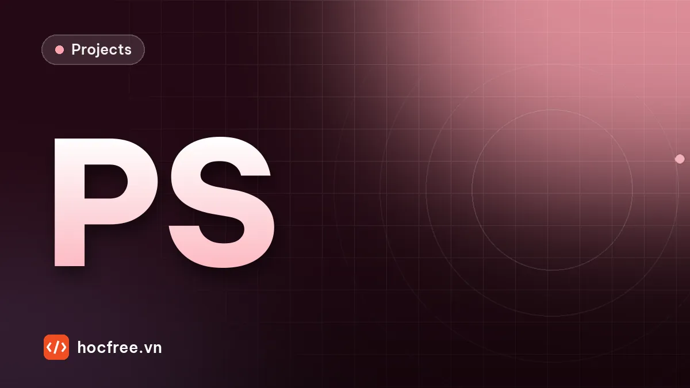

Dự án: photometric stereo tìm vết xước, vết lõm trên kim loại
Bốn đèn, bốn ảnh: tách pháp tuyến khỏi albedo để vết dầu không bị báo lỗi còn vết xước 15 µm hiện rõ; so đèn vòng, đèn xiên, hiệu chuẩn đèn bằng quả cầu.

Nội dung bài viết
Độ khó: ★★★★ (rất khó) · Cần học trước: chặng 6: Camera / Lens / Lighting, chặng 9: 3D Vision · Thời lượng: khoảng 2,5 giờ
Vết xước nông, vết móp nhỏ trên chi tiết kim loại gia công là loại lỗi khó nhất với camera thường: chúng không đổi màu bề mặt, chỉ đổi hình dạng vài chục micromet. Trong khi đó, vết dầu, vết bẩn, vân mài, chữ in thì đổi màu rất rõ nhưng hoàn toàn không phải lỗi. Một trạm chụp một ảnh sẽ hoặc loại nhầm hàng tốt có vết dầu, hoặc bỏ sót vết xước. Photometric stereo giải bài toán này: chụp cùng một chỗ dưới nhiều hướng đèn, rồi tách mỗi pixel thành hai đại lượng độc lập: hướng của bề mặt (pháp tuyến) và độ phản xạ (albedo). Lỗi hình học nằm trong pháp tuyến, vết bẩn nằm trong albedo.
1. Bài toán
"Mặt bích nhôm sau phay có vết xước do phoi kẹt và vết móp do va chạm khi vận chuyển, sâu khoảng 15 đến 40 µm. Khách hàng không chấp nhận. Trạm camera đèn vòng hiện tại loại nhầm rất nhiều vì vết dầu tưới nguội và vân dao, công nhân phải kiểm lại bằng mắt dưới đèn nghiêng."
| Đại lượng | Giá trị |
|---|---|
| Vùng kiểm | 12,8 × 12,8 mm, 20 pixel/mm (camera đơn sắc nhìn thẳng) |
| Lỗi | xước: rãnh chữ V rộng 0,2 mm, sâu 15 đến 30 µm; lõm: sâu 20 đến 40 µm, rộng khoảng 1 mm |
| Không phải lỗi | vết dầu, vết bẩn (đổi độ phản xạ tới 35%), vân mài, bề mặt gợn 10 µm |
| Chiếu sáng | 4 đèn thanh ở 4 hướng, nghiêng 40°, bật lần lượt, mỗi đèn một ảnh |
| Đầu ra | OK/NG, loại lỗi (xước/lõm), bản đồ albedo cho báo cáo thẩm mỹ |
2. Yêu cầu
- Không loại nhầm vì vết dầu, vết bẩn, vân mài.
- Bắt vết xước theo mọi hướng, không phụ thuộc hướng đèn.
- Phân biệt xước (dài, mảnh) và lõm (tròn) để thống kê nguyên nhân.
- Hướng đèn được hiệu chuẩn, không lấy từ bản vẽ lắp đặt.
3. Kiến thức sử dụng
- 7 kiểu chiếu sáng: đèn góc thấp làm nổi chi tiết bề mặt.
- Cảm biến 3D: photometric stereo là một kỹ thuật 3D chỉ đo độ dốc, không đo chiều cao tuyệt đối.
- Nhiễu và ảnh tuyến tính: photometric stereo cần cường độ tỉ lệ với ánh sáng (tắt gamma).
- Đại số tuyến tính: bình phương tối thiểu, ma trận giả nghịch đảo.
4. Dữ liệu: bề mặt và bốn đèn mô phỏng
Bề mặt được mô tả bằng bản đồ chiều cao z (mm) và albedo ρ. Mỗi đèn là một hướng đơn vị \(\mathbf{l}_k\); cường độ một pixel theo mô hình Lambert cộng một phần phản xạ gương nhỏ (nhôm gia công hơi bóng):
import cv2
import numpy as np
H = W = 256
PX_MM = 20.0 # 20 pixel/mm: vùng 12,8 × 12,8 mm
GOC_CAO = 40.0 # đèn nghiêng 40° so với mặt phẳng chi tiết
PHUONG = [0, 90, 180, 270] # 4 đèn ở 4 hướng
def huong_den(phuong=PHUONG, goc_cao=GOC_CAO):
t = np.radians(goc_cao)
return np.array([[np.cos(np.radians(p)) * np.cos(t), np.sin(np.radians(p)) * np.cos(t), np.sin(t)] for p in phuong])
L = huong_den()
def tao_be_mat(rng, loi=None, vet_ban=True):
"""Chiều cao z (mm) và albedo ρ. Luôn có vết bẩn, vết in (chỉ đổi albedo: không phải lỗi).
loi: 'xước' (rãnh chữ V sâu 15–30 µm) hoặc 'lõm' (vết móp sâu 20–40 µm) hoặc None."""
yy, xx = np.mgrid[:H, :W] / PX_MM
z = 0.01 * np.sin(xx / 3.1 + rng.uniform(0, 6)) * np.sin(yy / 2.7) # mặt hơi gợn (10 µm)
rho = 0.65 * (1 + 0.04 * cv2.GaussianBlur(rng.standard_normal((H, W)), (0, 0), sigmaX=8, sigmaY=0.6)) # vân mài ngang
for _ in range(rng.integers(1, 4) if vet_ban else 0): # vết bẩn, vết dầu: chỉ đổi màu
m = np.zeros((H, W), np.float32)
cv2.ellipse(m, (int(rng.integers(30, 226)), int(rng.integers(30, 226))), (int(rng.integers(8, 25)), int(rng.integers(5, 15))),
float(rng.uniform(0, 180)), 0, 360, 1, -1)
rho *= 1 - 0.35 * cv2.GaussianBlur(m, (0, 0), 3)
if loi == "xước":
p0, goc = rng.uniform(60, 196, 2), rng.uniform(0, np.pi)
d = np.abs((xx * PX_MM - p0[0]) * np.sin(goc) - (yy * PX_MM - p0[1]) * np.cos(goc)) / PX_MM # khoảng cách tới đường (mm)
doc = np.abs((xx * PX_MM - p0[0]) * np.cos(goc) + (yy * PX_MM - p0[1]) * np.sin(goc)) / PX_MM
nua_rong, sau = 0.1, rng.uniform(0.015, 0.03)
z -= sau * np.clip(1 - d / nua_rong, 0, 1) * (doc < rng.uniform(2, 4))
elif loi == "lõm":
c = rng.uniform(60, 196, 2) / PX_MM
z -= rng.uniform(0.02, 0.04) * np.exp(-((xx - c[0]) ** 2 + (yy - c[1]) ** 2) / (2 * 0.3 ** 2))
return z, rho
def phap_tuyen(z):
gy, gx = np.gradient(z, 1 / PX_MM)
n = np.dstack([-gx, -gy, np.ones_like(z)])
return n / np.linalg.norm(n, axis=2, keepdims=True)
def chup_4_den(z, rho, rng, guong=0.15, mu=30, L_that=L):
"""Lambert + phản xạ gương (kim loại hơi bóng) + nhiễu. Trả về mảng (4, H, W)."""
n = phap_tuyen(z)
anh = []
for l in L_that:
khuech_tan = rho * np.clip(n @ l, 0, None)
h = (l + [0, 0, 1]) / np.linalg.norm(l + [0, 0, 1])
anh.append(khuech_tan + guong * np.clip(n @ h, 0, None) ** mu + rng.normal(0, 0.005, z.shape))
return np.clip(np.array(anh), 0, 1).astype(np.float32)
rng = np.random.default_rng(0)
z, rho = tao_be_mat(rng, "xước")
anh4 = chup_4_den(z, rho, rng)
den_vong = anh4.mean(axis=0) # bật cả 4 đèn cùng lúc: như đèn vòng
cv2.imwrite("ps.png", np.uint8(255 * np.clip(np.hstack([*anh4, den_vong]) / 0.8, 0, 1)))
print("4 ảnh + ảnh đèn vòng:", anh4.shape, f"độ sâu vết xước lớn nhất {(-(z - cv2.GaussianBlur(z, (0, 0), 6))).max() * 1000:.0f} µm")4 ảnh + ảnh đèn vòng: (4, 256, 256) độ sâu vết xước lớn nhất 23 µmFile ps.png ghép 4 ảnh đèn đơn và ảnh "đèn vòng" (trung bình 4 ảnh, như bật cả 4 đèn cùng lúc). Vết xước hiện rõ dưới mỗi đèn xiên nhưng gần như biến mất dưới đèn vòng; ba vết bẩn thì hiện rõ ở mọi ảnh.
5. Lời giải 1 và 2: một ảnh
Cả hai dùng cùng một phép phát hiện: vùng lệch khỏi nền cục bộ (ảnh trừ ảnh làm mờ) quá ngưỡng. Lời giải 1 dùng ảnh đèn vòng, lời giải 2 dùng ảnh của một đèn xiên.
# Lời giải 1 và 2: tìm vùng lệch khỏi nền cục bộ trên MỘT ảnh (đèn vòng, hoặc một đèn xiên)
def bat_thuong_mot_anh(anh, nguong=0.06, dien_tich_min=15):
du = anh - cv2.GaussianBlur(anh, (0, 0), 10)
m = (np.abs(du) > nguong).astype(np.uint8)
n, _, st, _ = cv2.connectedComponentsWithStats(m)
return "NG" if (st[1:, cv2.CC_STAT_AREA] >= dien_tich_min).any() else "OK"6. Lời giải 3: photometric stereo
Đặt \(\mathbf{g} = \rho\,\mathbf{n}\) (ba ẩn). Với 4 đèn, mỗi pixel cho 4 phương trình tuyến tính \(I_k = \mathbf{l}_k \cdot \mathbf{g}\), tức \(\mathbf{I} = L\,\mathbf{g}\) với \(L\) là ma trận 4 × 3 các hướng đèn. Nghiệm bình phương tối thiểu \(\mathbf{g} = L^{+}\mathbf{I}\) (giả nghịch đảo), rồi \(\rho = \|\mathbf{g}\|\), \(\mathbf{n} = \mathbf{g}/\rho\). Vì \(L\) giống nhau cho mọi pixel, cả ảnh được giải bằng một phép nhân ma trận.
Từ pháp tuyến suy ra độ dốc bề mặt \(p = -n_x/n_z\), \(q = -n_y/n_z\). Trừ đi độ dốc nền đã làm mượt (σ = 0,75 mm, đủ lớn để không "ăn" vết lõm rộng 1 mm) còn lại độ dốc bất thường: chỉ gồ ghề cục bộ như xước và lõm. Blob lớn nhất được phân loại theo hình dạng: dài và mảnh là xước, tròn là lõm.
def photometric_stereo(anh4, L_gia_dinh=L):
"""Giải I_k = ρ·(n·l_k) cho từng pixel bằng bình phương tối thiểu (4 phương trình, 3 ẩn của g = ρ·n).
Trả về pháp tuyến (H, W, 3) và albedo (H, W)."""
I = anh4.reshape(len(L_gia_dinh), -1).T # (số pixel, số đèn)
G = I @ np.linalg.pinv(L_gia_dinh).T # g = L⁺ · I cho mọi pixel cùng lúc
rho = np.linalg.norm(G, axis=1)
n = G / np.maximum(rho[:, None], 1e-6)
return n.reshape(H, W, 3), rho.reshape(H, W)
def do_doc_bat_thuong(n):
"""Độ dốc bề mặt (p = -nx/nz, q = -ny/nz) trừ đi độ dốc nền đã làm mượt: chỉ còn gồ ghề cục bộ (xước, lõm)."""
p, q = -n[..., 0] / n[..., 2], -n[..., 1] / n[..., 2]
return np.hypot(p - cv2.GaussianBlur(p, (0, 0), 15), q - cv2.GaussianBlur(q, (0, 0), 15)) # nền: σ = 0,75 mm
def kiem_ps(anh4, nguong=0.045, dien_tich_min=15, **kw):
n, rho = photometric_stereo(anh4, **kw)
m = (do_doc_bat_thuong(n) > nguong).astype(np.uint8)
so, _, st, _ = cv2.connectedComponentsWithStats(m)
lon = [k for k in range(1, so) if st[k, cv2.CC_STAT_AREA] >= dien_tich_min]
if not lon:
return "OK", None
k = max(lon, key=lambda k: st[k, cv2.CC_STAT_AREA])
dai, hep = max(st[k, 2], st[k, 3]), min(st[k, 2], st[k, 3])
return "NG", "xước" if dai > 3 * hep or dai > 40 else "lõm"
def sai_so_goc(n, n_that):
return np.degrees(np.arccos(np.clip((n * n_that).sum(axis=2), -1, 1)))
n_ps, rho_ps = photometric_stereo(anh4)
n_that = phap_tuyen(z)
print(f"sai số góc pháp tuyến: trung vị {np.median(sai_so_goc(n_ps, n_that)):.2f}°, phân vị 99 {np.percentile(sai_so_goc(n_ps, n_that), 99):.2f}°")
print(f"albedo: tương quan với albedo thật {np.corrcoef(rho_ps.ravel(), rho.ravel())[0, 1]:.3f}")
print("chi tiết ví dụ:", kiem_ps(anh4))sai số góc pháp tuyến: trung vị 0.48°, phân vị 99 1.43°
albedo: tương quan với albedo thật 0.989
chi tiết ví dụ: ('NG', 'xước')Pháp tuyến khôi phục được sai lệch trung vị khoảng 0,5° so với thật, 99% số pixel dưới 1,5°, dù có phản xạ gương và nhiễu. Albedo khôi phục gần như trùng albedo thật: vết bẩn và vân mài nằm gọn trong bản đồ albedo, tách hẳn khỏi hình học.
7. So sánh
from collections import Counter
rng_dg = np.random.default_rng(1)
kq = {"đèn vòng": Counter(), "một đèn xiên (0°)": Counter(), "photometric stereo": Counter()}
gioi = Counter()
for i in range(120):
loi = [None, "xước", "lõm"][i % 3]
z_i, rho_i = tao_be_mat(rng_dg, loi)
a4 = chup_4_den(z_i, rho_i, rng_dg)
that = "OK" if loi is None else "NG"
gioi[that] += 1
for ten, tt in (("đèn vòng", bat_thuong_mot_anh(a4.mean(axis=0))), ("một đèn xiên (0°)", bat_thuong_mot_anh(a4[0])),
("photometric stereo", kiem_ps(a4)[0])):
kq[ten]["loại nhầm" if that == "OK" and tt == "NG" else "lọt" if that == "NG" and tt == "OK" else "đúng"] += 1
print(f"120 chi tiết: {gioi['OK']} tốt (đều có vết bẩn, vết dầu), {gioi['NG']} có xước hoặc lõm")
for ten, c in kq.items():
print(f" {ten:20s}: loại nhầm {c['loại nhầm']:2d}, lọt {c['lọt']:2d}")
# Mỗi cách có thấy chính vết lỗi không? Thử trên chi tiết lỗi KHÔNG có vết bẩn
thay = Counter()
for i in range(80):
loi = ["xước", "lõm"][i % 2]
z_i, rho_i = tao_be_mat(rng_dg, loi, vet_ban=False)
a4 = chup_4_den(z_i, rho_i, rng_dg)
thay[("đèn vòng", loi)] += bat_thuong_mot_anh(a4.mean(axis=0)) == "NG"
thay[("một đèn xiên (0°)", loi)] += bat_thuong_mot_anh(a4[0]) == "NG"
tt, kieu = kiem_ps(a4)
thay[("photometric stereo", loi)] += tt == "NG"
thay["gọi đúng loại"] += kieu == loi
print("thấy chính vết lỗi (chi tiết không có vết bẩn, mỗi loại 40):")
for ten in kq:
print(f" {ten:20s}: xước {thay[(ten, 'xước')]}/40, lõm {thay[(ten, 'lõm')]}/40")
print(f" photometric stereo gọi đúng loại xước/lõm: {thay['gọi đúng loại']}/80")120 chi tiết: 40 tốt (đều có vết bẩn, vết dầu), 80 có xước hoặc lõm
đèn vòng : loại nhầm 40, lọt 0
một đèn xiên (0°) : loại nhầm 40, lọt 0
photometric stereo : loại nhầm 0, lọt 0
thấy chính vết lỗi (chi tiết không có vết bẩn, mỗi loại 40):
đèn vòng : xước 0/40, lõm 0/40
một đèn xiên (0°) : xước 26/40, lõm 0/40
photometric stereo : xước 40/40, lõm 40/40
photometric stereo gọi đúng loại xước/lõm: 80/80Bảng đầu: đèn vòng và một đèn xiên loại nhầm toàn bộ 40 chi tiết tốt (vì vết dầu) và "không lọt lỗi" chỉ vì chúng loại mọi chi tiết. Bảng sau mới cho thấy chúng thật sự thấy gì khi không có vết bẩn: đèn vòng không thấy vết xước hay vết lõm nào. Lý do: tổng 4 đèn đối xứng chỉ còn phụ thuộc \(n_z\), mà \(n_z\) gần như không đổi với độ dốc nhỏ. Một đèn xiên thấy khoảng hai phần ba số vết xước: vết xước chạy song song với hướng đèn thì cả hai sườn rãnh được chiếu như nhau và vô hình. Cả hai cách đều không thấy vết lõm rộng, nông. Photometric stereo thấy hết, gọi đúng loại hết, và không loại nhầm chi tiết có vết dầu nào.
8. Bẫy thực tế
| Bẫy | Hậu quả | Cách tránh |
|---|---|---|
| Chi tiết di chuyển giữa các lần chụp | Pixel không khớp, pháp tuyến sai ở mọi mép | Chụp khi chi tiết đứng yên, đèn chớp nhanh liên tiếp; hoặc camera line-scan nhiều đèn đồng bộ |
| Hướng đèn lấy từ bản vẽ | Độ dốc bị phóng đại hoặc thu nhỏ, ngưỡng không mang sang trạm khác (bài tập 1) | Hiệu chuẩn bằng quả cầu mờ, kiểm định kỳ |
| Bề mặt rất bóng (gương) | Mô hình Lambert sai, có điểm chói | Thêm đèn, loại phép đo chói; với mặt gương thật dùng deflectometry |
| Bật gamma, auto exposure | Cường độ không tuyến tính, nghiệm sai | Ảnh tuyến tính, phơi sáng cố định, flat-field từng đèn |
| Đèn không đều trên vùng nhìn | Hướng đèn thật đổi theo vị trí pixel | Vùng kiểm nhỏ so với khoảng cách đèn, hoặc hiệu chuẩn hướng đèn theo vùng |
| Bóng tự che ở vết lõm sâu, mép dốc | Một đèn cho cường độ 0, phương trình sai | Bỏ phép đo bị che khi có từ 4 đèn trở lên |
9. Tự đánh giá
- Pháp tuyến sai lệch trung vị khoảng 0,5° trên mô phỏng; albedo tách sạch khỏi hình học.
- 0 loại nhầm do vết dầu; bắt và phân loại đúng mọi vết xước, vết lõm trong bộ thử.
- Biết chứng minh bằng số vì sao đèn vòng và một đèn xiên không đủ.
- Hướng đèn được hiệu chuẩn bằng quả cầu.
Bài tập
Bài 1. Hiệu chuẩn hướng đèn bằng quả cầu
Đèn thật được lắp ở góc cao 34°, phương lệch vài độ, nhưng phần mềm vẫn giả định 40°. Ước lượng hướng đèn từ ảnh một quả cầu trắng mờ (pháp tuyến biết trước), rồi so kết quả trên một chi tiết có vết lõm.
Xem đáp án
# Đèn thật lắp ở góc cao 34°, phương lệch vài độ; phần mềm vẫn giả định 40° và 0/90/180/270°
L_lap_that = huong_den([3, 94, 178, 265], 34.0)
rng_e1 = np.random.default_rng(20)
# Hiệu chuẩn: chụp một quả cầu trắng mờ (albedo 1). Pháp tuyến của quả cầu biết trước từ hình học.
yy, xx = np.mgrid[:H, :W]
r_cau = 100
nx, ny = (xx - W / 2) / r_cau, (yy - H / 2) / r_cau
trong_cau = nx ** 2 + ny ** 2 < 0.95
n_cau = np.dstack([nx, ny, np.sqrt(np.clip(1 - nx ** 2 - ny ** 2, 0, None))])
L_uoc = []
for l in L_lap_that:
anh = np.clip(n_cau @ l, 0, None) + rng_e1.normal(0, 0.005, (H, W))
dung = trong_cau & (anh > 0.05) # chỉ pixel được chiếu sáng (bỏ vùng bóng tự che)
l_uoc, *_ = np.linalg.lstsq(n_cau[dung], anh[dung], rcond=None)
L_uoc.append(l_uoc / np.linalg.norm(l_uoc))
L_uoc = np.array(L_uoc)
goc_cao_uoc = np.degrees(np.arcsin(L_uoc[:, 2]))
print("góc cao ước lượng:", goc_cao_uoc.round(1), "(thật 34°)")
z_t, rho_t = tao_be_mat(rng_e1, "lõm")
a4 = chup_4_den(z_t, rho_t, rng_e1, L_that=L_lap_that)
doc_that = do_doc_bat_thuong(phap_tuyen(z_t)).max()
print(f"độ dốc bất thường lớn nhất của vết lõm (thật): {doc_that:.3f}")
for ten, Lg in (("giả định 40°", L), ("hiệu chuẩn bằng quả cầu", L_uoc)):
n_e, _ = photometric_stereo(a4, L_gia_dinh=Lg)
print(f"{ten:24s}: sai số pháp tuyến trung vị {np.median(sai_so_goc(n_e, phap_tuyen(z_t))):.2f}°, "
f"độ dốc bất thường lớn nhất {do_doc_bat_thuong(n_e).max():.3f}")góc cao ước lượng: [34. 34. 34. 34.] (thật 34°)
độ dốc bất thường lớn nhất của vết lõm (thật): 0.050
giả định 40° : sai số pháp tuyến trung vị 0.55°, độ dốc bất thường lớn nhất 0.086
hiệu chuẩn bằng quả cầu : sai số pháp tuyến trung vị 0.44°, độ dốc bất thường lớn nhất 0.069Với quả cầu mờ albedo 1, mỗi pixel được chiếu cho một phương trình \(I = \mathbf{n}\cdot\mathbf{l}\) với \(\mathbf{n}\) đã biết, nên một ảnh đủ để giải \(\mathbf{l}\) bằng bình phương tối thiểu (chỉ dùng pixel được chiếu, bỏ vùng tự che). Kết quả đúng 34°. Giả định sai 40° không làm hỏng phát hiện ở ví dụ này, nhưng làm độ dốc đo được phóng đại khoảng 1,24 lần, đúng bằng \(\tan 40° / \tan 34°\): ngưỡng chọn trên trạm này sẽ không đúng cho trạm khác lắp đèn hơi khác, và lỗi sát ngưỡng sẽ được gọi khác nhau giữa hai trạm. Để ý cả với đèn đúng, độ dốc lớn nhất đo được vẫn cao hơn giá trị thật vì nhiễu cộng vào; ngưỡng phải chọn trên dữ liệu đo, không trên lý thuyết.
Bài 2. Ba, bốn hay tám đèn?
Ba đèn là đủ về mặt toán (ba ẩn). So sai số pháp tuyến với 3, 4 và 8 đèn cách đều.
Xem đáp án
rng_e2 = np.random.default_rng(21)
z_t, rho_t = tao_be_mat(rng_e2, None)
for so_den in (3, 4, 8):
Lk = huong_den(list(np.arange(so_den) * 360 / so_den))
sai = []
for _ in range(5):
a = chup_4_den(z_t, rho_t, rng_e2, L_that=Lk)
n_e, _ = photometric_stereo(a, L_gia_dinh=Lk)
sai.append(np.median(sai_so_goc(n_e, phap_tuyen(z_t))))
print(f"{so_den} đèn: sai số pháp tuyến trung vị {np.mean(sai):.2f}°, thời gian chụp {so_den} lần phơi sáng")3 đèn: sai số pháp tuyến trung vị 0.55°, thời gian chụp 3 lần phơi sáng
4 đèn: sai số pháp tuyến trung vị 0.47°, thời gian chụp 4 lần phơi sáng
8 đèn: sai số pháp tuyến trung vị 0.34°, thời gian chụp 8 lần phơi sángBa đèn cho nghiệm chính xác nhưng không có dư thừa: mọi nhiễu đi thẳng vào pháp tuyến, và nếu một đèn bị che (bóng) thì không còn giải được. Bốn đèn giảm sai số và cho phép bỏ một phép đo hỏng; tám đèn tốt hơn nữa nhưng tốn gấp đôi thời gian chụp. Bốn đèn là điểm cân bằng phổ biến trong công nghiệp; tăng số đèn khi bề mặt bóng hoặc có nhiều vùng tự che.
Nguồn tham khảo: R. J. Woodham, "Photometric method for determining surface orientation from multiple images", Optical Engineering 19(1), 1980; R. Szeliski, Computer Vision: Algorithms and Applications, 2nd ed., 2022, phần shape from shading và photometric stereo (szeliski.org/Book); C. Steger, M. Ulrich, C. Wiedemann, Machine Vision Algorithms and Applications, 2nd ed., Wiley-VCH, 2018; NumPy: numpy.linalg.pinv.